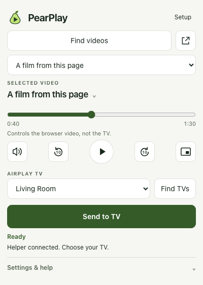

A little popup. A bigger picture.
From browser.
To big screen.
Choose a compatible video.
Send it directly to your Apple TV.
Keep your desktop to yourself.
LinuxmacOSWindows
A little popup. A bigger picture.
Choose a compatible video.
Send it directly to your Apple TV.
Keep your desktop to yourself.

Actual interface · example selections